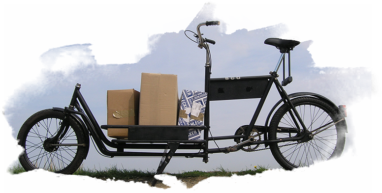

Deskresearch
Bei der Hintergrundrecherche haben sich viele interessante Themenfelder aufgetan. Besonders faszinierend waren dabei Lastenräder. In diesem Zusammenhang stellt sich die Frage, was so ein Lastenrad überhaupt ist.
Ein Lastenfahrrad ist ein Fahrrad mit dem Lasten Transportiert werden können.Wikipedia

Diese nichtssagende Definition erklärt die Breite des Spektrums Lastenrad und wieso der Markt heute so unübersichtlich ist. Jede Einteilung ist nur eine sehr grobe Annäherung an das Gesamtbild. Die von e-lastenrad.de gewählte Einteilung ist knapp und deckt die für den Alltagsgebrauch wichtigsten Lastenräder ab.